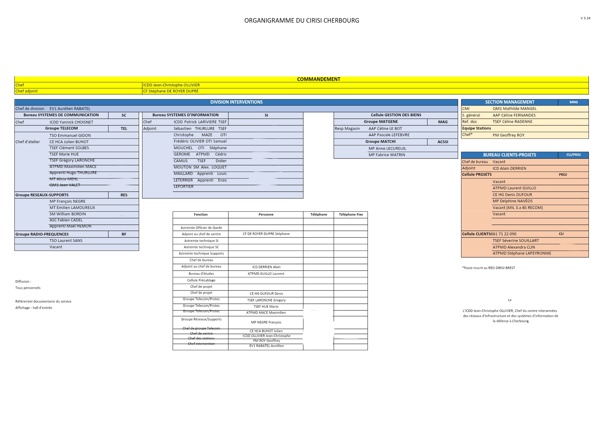

1. Présentation générale de l’entreprise
Informations générales
Nom : Commissariat au Numérique de Défense (CND)
Secteur : Télécommunications et informatique
Taille : Grande entité du ministère des armées (7000 employés)
Localisation : France et étranger
Organigramme :
Activités
-
 Piloter et coordonner la transformation numérique du ministère des Armées
Piloter et coordonner la transformation numérique du ministère des Armées
-
 Définir les orientations stratégiques en systèmes d’information, cyberdéfense, données et IA
Définir les orientations stratégiques en systèmes d’information, cyberdéfense, données et IA
-
 Garantir la cohérence, la sécurité et la souveraineté numérique
Garantir la cohérence, la sécurité et la souveraineté numérique
-
 Moderniser les infrastructures et développer des solutions numériques adaptées aux forces
Moderniser les infrastructures et développer des solutions numériques adaptées aux forces
-
 Favoriser l’innovation, l’interopérabilité et la résilience des capacités numériques
Favoriser l’innovation, l’interopérabilité et la résilience des capacités numériques
2. Positionnement du service
Je me situe, comme on peut le voir sur l'organigramme ci-dessous, au sein du groupe réseau du CAN Cherbourg en tant qu'apprenti technicien réseau. Le CAN Cherbourg se situe sous les directives de la Direction d'Appui au Numérique Zonale de Brest (DANZ Brest), CF organigramme du CND.
Nous sommes amenés à travailler régulièrement en collaboration avec la division systèmes d'information (SI) et le groupe télécom afin d'assurer un soutien de proximité en continu aux unités se situant dans les départements de la manche et du calvados.
Organigramme :

3. Missions confiées et responsabilités
1 Mission principale
Maintien en condition opérationnelle des réseaux informatiques au profit des unités que le CAN Cherbourg déssert (dépannage, remplacement d'anciens équipements)
2 Mission secondaire
Participation à la réalisation de projets permettant l'évolution des réseaux informatiques des armées (phases de tests, déploiement)
3 Responsabilités
Autonomie pour la réalisation de certaines missions (réseau internet)
4. Évolution au fil de l’année
Lorsque je suis fraîchement arrivé au CIRISI (CAN Cherbourg depuis septembre 2025), je n'avais guère beaucoup d'expérience à mon actif. Mes missions étaient surtout de l'observation mais mon tuteur m'a vite fait pratiquer sur du matériel physique. Au fil des interventions et des tâches que nous devions réaliser j'ai pu prendre de l'expérience et de l'autonomie, j'y ai acquis des compétences techniques que ce soit de la configuration d'un équipement jusqu'à son déploiement ou bien de l'apprivoisement de l'environnement professionnel et militaire qui m'entourait. Aujourd'hui je prépare un projet en autonomie qui si vous le souhaitez, vous pouvez en découvrir les prémices.
5. Lien avec mon projet professionnel
Cette expèrience est pour moi une riche aventure humaine ett technique, elle m'a permis de continuer ma découverte du milieu militaire et ainsi me conforter dans l'idée de vouloir continuer à travailler au sein du ministère.
| Compétences développées | Utilité pour mon projet | Niveau |
|---|---|---|
| Compétence technique | Essentielle pour le métier visé |
|
| Organisation / autonomie | Indispensable en milieu professionnel |
|
Cette alternance a donc été pour moi la porte d'entrée vers un monde professionnel que j'aime.